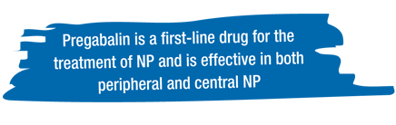
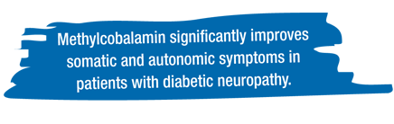
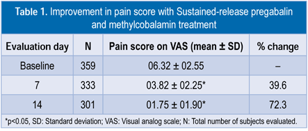
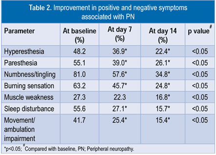
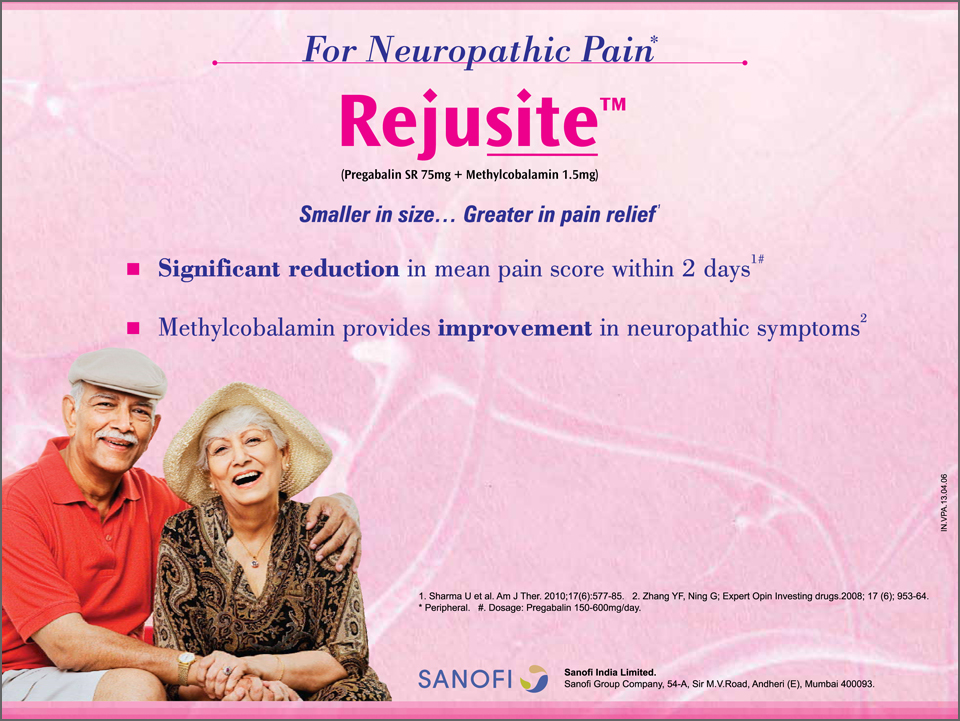

Pregabalin and methylcobalamin combination for neuropathic pain: The Indian scenario
by medeka healthcare on october 01, 2013
Pregabalin is a first-line drug for the treatment of NP and is effective in both peripheral and central NP.1 Pregabalin significantly reduces pain as early as the first week of treatment with beneficial effects on sleep and mood disturbances. A Cochrane metaanalysis showed that pregabalin is effective in treating NP and fibromyalgia.3 The American Association of Neuromuscular and Electrodiagnostic Medicine, the American Academy of Neurology, and the American Academy of Physical Medicine and Rehabilitation guidelines report that pregabalin is effective and recommend it for the treatment of painful diabetic neuropathy.4 However, pregabalin has a short halflife, and therefore needs frequent administration. This limitation of pregabalin might reduce patient compliance, particularly when used as a long-term therapy. Hence, a sustained-release formulation of pregabalin may be a good option.1
The myelin sheath insulates nerves and helps in the proper and rapid conduction of impulses. Vitamin B12 deficiency can damage the myelin sheath.1 A study showed that methylcobalamin, the neurological active form of vitamin B12, significantly improves somatic and autonomic symptoms in patients with diabetic neuropathy when compared to placebo.5 A systematic review of clinical controlled trials concluded that methylcobalamin has beneficial effects on autonomic symptoms, somatosensory symptoms, and pain.6 Chronic use of metformin, a first-line drug for diabetes mellitus, causes vitamin B12 deficiency and thereby aggravates neuropathy in patients with type 2 diabetes mellitus. Methylcobalamin helps regenerate the myelin sheath and restores nerve function. Hence, the addition of pregabalin to methylcobalamin may help in relieving pain.1
Pregabalin and methylcobalamin are both capable of relieving the symptoms of peripheral neuropathy (PN). Prabhoo et al. reported that a fixed dose combination of methylcobalamin and pregabalin is well-tolerated and efficacious in NP.7 Additionally, 87% doctors and 88.11% patients expressed response to therapy as good to excellent. A fixed dose combination of pregabalin immediate release and methylcobalamin was evaluated in the PRECISE (PREgabalin sustained release Combination In Several Endpoints) study.2 It was found that the fixed dose combination of pregabalin immediate release and methylcobalamin was effective and well-tolerated in Indian patients with various neuropathies and orthopedic conditions.
The PRECISE II study assessed the efficacy and safety of fixed dose combination of sustained-release pregabalin and immediate release methylcobalamin in Indian patients in reducing NP in real-life situations. In PRECISE II, a prospective, multicenter, openlabelled, single-arm, observational, 14-day study, patients with PN received sustained-release pregabalin 75 mg or 150 mg combined with methylcobalamin 1500 mg immediate release. Pregabalin 75 mg/day was the most commonly prescribed dosage for sustainedrelease pregabalin and methylcobalamin, contrary to the dose range recommended for pregabalin (150–600 mg/day). The study results were:
- Sustained-release pregabalin and
methylcobalamin significantly reduced pain
Sustained-release pregabalin and methylcobalamin significantly reduced the 10-point visual analog scale (VAS) score for pain as early as the first week of treatment. Sustained-release pregabalin and methylcobalamin significantly improved pain within 1 week (p<0.05), which continued further over the 2-week period (p<0.05, Table 1). A 72.3% reduction in VAS score for pain was noted within a short span of 2 weeks.

- Sustained-release pregabalin and
methylcobalamin improved positive and
negative symptoms of PN
Sustained-release pregabalin and methylcobalamin significantly improved (p<0.05) negative and positive symptoms of PN (Table 2). Improvements were consistent irrespective of the cause of neuropathy According to the global assessment of efficacy, 97% of patients and 99% of investigators rated combination of sustained-release pregabalin and methylcobalamin as good to excellent. Similarly, 99% of patients and investigators reported good to excellent tolerability.
 - Adverse effects of sustained-release pregabalin
and methylcobalamin
Giddiness (4.7%), sedation (3.6%), dizziness (2.9%), drowsiness (2.3%), and nausea (2.3%) were the most common adverse effects. Except giddiness, all adverse effects were mild to moderate. In the PRECISE II study, the incidence of adverse effects such as giddiness (38.50% vs. 3.6%) and sedation (36.73% vs. 4.7%) were lower when compared with the PRECISE study. This lower incidence of adverse effects can be attributed to the sustained release formulation and the lower dose of pregabalin used in most patients in the PRECISE II study.
Dongre et al. concluded that sustained-release pregabalin and methylcobalamin significantly reduces NP with improvement in both positive and negative symptoms associated with neuropathy, in Indian patients.
- 

Contents
- Initial monotherapy with levetiracetam fails more frequently than monotherapy with valproate or oxcarbazepine:An enlightening evidence
- Sodium valproate:A gold standard for the treatment of childhood epilepsy
- Superior efficacy of sodium valproate IV reported in acute seizures and status epilepticus
- Clobazam: An effective long-term treatment option for Lennox-Gastaut syndrome
- Hospital coverage:Krishna Institute of Medical Sciences
- Oxcarbazepine:A valuable treatment option for partial-onset seizures in children
- Pregabalin and methylcobalamin combination for neuropathic pain:The Indian scenario
- Important aspects of epilepsy management:during pregnancy
- Neurology News
- Neurology Quiz
News Digest

ECG should be considered in patients with refractory epilepsy
Analysis of electrocardiogram (ECG) monitoring in patients with refractory epilepsy revealed significant differences in heart rate between ictal and pre-ictal states, between ictal and post-ictal states, and between pre- and post-ictal states. Hence, ECG might be helpful to detect serious cardiac abnormalities in patients with refractory epilepsy.
J Res Med Sci. 2013;18(Suppl 1):S32–4.

Use of gabapentin in pregnancy is not associated with increased risk of major malformations
A prospective study of pregnancy outcomes in 223 pregnant women who were exposed to gabapentin and 223 pregnant women who were unexposed to gabapentin reported that gabapentin use in pregnancy was not associated with increased risk for major malformations.
Epilepsy Behav. 2013;26(1):109–13.

A portable automatic device for the detection of generalized tonicclonic seizures
Increased S100B protein levels in cerebrospinal fluid may be associated with the neuronal damage following central nervous infections.
Epilepsia. 2013;54(4):e58–61.
Updates